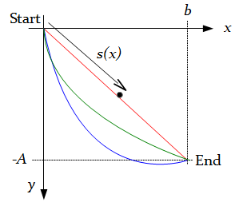
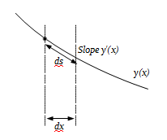

Calculus of variations: a lunchbreak guide
Kevin Boone, August 2013Introduction
 The calculus of variations is a branch of mathematics that deals with finding
functions that optimize systems. That is, it finds functions which describe shapes
or surfaces that minimize time or distance, or maximize strength, among other things.
Calculus of variations is also of importance in theoretical physics, where is it used, among
many other things, to
determine the equations of motion of particles subject to particular conditions.
Although the calculus of variations has its origins in the 18th century, it is still not
widely taught, either to science of engineering students. Kreyszig's family-bible-sized
Advanced Engineering Mathematics gives it not so much as a passing mention in
any of its twelve hundred pages. In addition, the language of the subject, and the
concepts on which it depends, are likely to be somewhat unfamiliar, even to engineers
with a strong mathematics background.
This article attempts to describe the basic principles of calculus of variations,
and solve a simple variational problem, in a way that should be comprehensible to
a person with high-school calculus and algebra. My intention is that it should
be possible to read it in about an hour.
I wrote this article in the hope that it will be useful to people who might be
considering studying calculus of variations, or have an inkling that
they might need it in their work, but have no idea where to start. There are many
simplifications, and some important results are assumed, rather than proved. However,
I hope that it is sufficient to give at least a taste of the subject.
The article begins by explaining the fundamental terminology of the subject.
The remainder of the article concentrates of solving a specific variational problem, the
notorious brachistochrone problem.
It's not the simplest of applications of calculus of variations
-- although it's pretty simple as these things go -- but it seems to
me to be the simplest non-trivial example. That is, it's the simplest
example that produces a result which you probably couldn't intuit
or derive from simple geometry. We will apply the Euler-Lagrange equation
-- one of the fundamental
tools of the subject -- to the physical system to produce a differential
equation, and then solve this equation. Finally, we will see plots of the actual
solution functions for specific geometries of the physical system.
Technical note: this article uses the MathJax library for formatting equations.
This is a JavaScript library, and you might get script warnings from some browsers, particular
Microsoft Internet Explorer.
The calculus of variations is a branch of mathematics that deals with finding
functions that optimize systems. That is, it finds functions which describe shapes
or surfaces that minimize time or distance, or maximize strength, among other things.
Calculus of variations is also of importance in theoretical physics, where is it used, among
many other things, to
determine the equations of motion of particles subject to particular conditions.
Although the calculus of variations has its origins in the 18th century, it is still not
widely taught, either to science of engineering students. Kreyszig's family-bible-sized
Advanced Engineering Mathematics gives it not so much as a passing mention in
any of its twelve hundred pages. In addition, the language of the subject, and the
concepts on which it depends, are likely to be somewhat unfamiliar, even to engineers
with a strong mathematics background.
This article attempts to describe the basic principles of calculus of variations,
and solve a simple variational problem, in a way that should be comprehensible to
a person with high-school calculus and algebra. My intention is that it should
be possible to read it in about an hour.
I wrote this article in the hope that it will be useful to people who might be
considering studying calculus of variations, or have an inkling that
they might need it in their work, but have no idea where to start. There are many
simplifications, and some important results are assumed, rather than proved. However,
I hope that it is sufficient to give at least a taste of the subject.
The article begins by explaining the fundamental terminology of the subject.
The remainder of the article concentrates of solving a specific variational problem, the
notorious brachistochrone problem.
It's not the simplest of applications of calculus of variations
-- although it's pretty simple as these things go -- but it seems to
me to be the simplest non-trivial example. That is, it's the simplest
example that produces a result which you probably couldn't intuit
or derive from simple geometry. We will apply the Euler-Lagrange equation
-- one of the fundamental
tools of the subject -- to the physical system to produce a differential
equation, and then solve this equation. Finally, we will see plots of the actual
solution functions for specific geometries of the physical system.
Technical note: this article uses the MathJax library for formatting equations.
This is a JavaScript library, and you might get script warnings from some browsers, particular
Microsoft Internet Explorer.
Functionals, and their minimization
Problems in the calculus of variations typically require finding a function that minimizes a functional. For this statement to make any sense, we need to understand what a functional is, and what it means to minimize it. A functional is a function that operates on another function. A simple example of a functional is the area-under-a-curve operation represented by an ordinary integral operator: $$ \begin{equation} S[y] = \int^1_0 y(x)\,dx \label{simple_def_int} \end{equation} $$ This functional takes as its input a function, and produces as output a single real number. I will use the square bracket notation '[x]' for the argument to a functional, even though this is considered old-fashioned, just to make it clear that we're referring to a functional, rather than an 'ordinary' function. Applying the functional above to a couple of sample functions produces the following results. For \(y(x)=x^2\) we have: $$ S[x^2] = \int^1_0 x^2\,dx = 1/3 \approx 0.33 $$ and for \(y(x)=e^x\): $$ S[e^x] = \int^1_0 e^x\,dx = e-1 \approx 1.72 $$ Naturally these different values of y (that is, different functions called y) produce different values of the functional. That's just a fancy way of saying that the values of their definite integrals between the limits 0 and 1 are different. So the question arises: can we find a value of y (that is, find a function y=f(x)) which minimizes the value of the functional? We can also ask whether there is a value of y that maximizes the functional. In fact, common sense suggests that the functional in equation \eqref{simple_def_int} can neither be minimized nor maximized: \(y(x)=-10^{100}\) (which is, of course, a constant) produces a very large negative number as the result of evaluating the functional; but \(y(x)=10^{100} + 1\) produces an even larger positive one. If we rewrite the functional as: $$ S[y] = \int^1_0 y^2(x)\,dx $$ then we can see that the functional probably can have a minumum (provided y is real-valued) -- the minimum is probably zero. That's because whatever function we assign to y, the square of its value is going to be non-negative, because the square of any real number is non-negative. Common sense suggests that a value of y that minimizes the functional \(s[y]\) is the trivial one \(y(x)=0\). It is important at this stage to be clear about the distinction between minimizing a functional, and minimizing a function. When we minimize a function, we are typically looking for an argument, or set of arguments, for which the value of the function is minimal. For example, the function y(x)=x2 has a minimum at x=0. In such a case, we're working only with a single, known function. In functional minimization, however, we're looking not for specific arguments to a function, but for the function itself. If you're familiar with minimization of functions, then you'll be aware that 'minimum' is an ambiguous term, because the value of the function can be locally a minimum, while having a lower value elsewhere, perhaps where it is difficult to find. The lowest of these lower values, if it exists, is referred to as the global minimum. You'll also probably be aware that functions can have turning points that are not minima -- they might be maxima, or inflexion points (neither minima nor maxima). In the calculus of variations analagous problems arise. I have until now glibly used the word 'minimum' of a functional, and will continue to do so, neglecting the fact that it is hard to be sure that what we are finding is actually a minimum, much less a global minimum. In the calcus of variations the analog of a turning point is called a stationary path, but I will continue to use the term minimal, until we return to a discussion of these complexities at the end of the article. I should also point out that most physical systems in the calculus of variations lead to functionals more complex than the simple example of equation \eqref{simple_def_int}, and which have non-obvious minimizing functions. In reality, the prospects for finding a closed-form analytical solution to a variational problem in a real physical system are not good, and numerical methods are the order of the day.Representing the physical problem as a functional
A fundamental first step in the application of calculus of variations, if it is to be anything other than a purely intellectual exercise, is to represent the phsyical system of interest as a functional. That is, since we are trying to find an unknown function, we must write a functional that operates on the unknown function, and produces a number. We then seek to find the unknown function that minimizes that number. All this is very abstract, and can perhaps best be expressed as an example. The example I've chosen is the brachistochrone problem, which considers a smooth, frictionless surface down which a a ball rolls. To simplify matters we will assume that there is no air resistance, and that the ball is so small that it is essentially a point mass, so it has no rotational inertia. Thus the only force acting on the ball is gravity. Even with a physical system this simple, with all these simplications, the solution is far from trivial, as we shall see. The system is summarised in the diagram below.
The problem is to find a shape which minimizes the time taken for the ball to reach the bottom. That is, we drop the object from point (0,0), and we want it to get to point (b, -A) in the shortest possible time. The distance s(x) is the distance that the moving part has travelled from the starting point when its distance along the x-axis is x. Differentiating s(x) gives us the velocity of the moving part along the curve for some value of x, denoted by s'(x). The 'prime' notation f' denotes the derivative of a function with respect to its argument. In this article all functions that are denoted this way are derivatives with respect to distance x. However, I retain the argument x on the function right up until the last page of this article, just to make this point absolutely clear. Clearly the straight line between the start and the end, the red line, is the shortest distance, but it doesn't lead to the quickest descent, as we shall see. In the figure above, the blue, red, and green curves all seem to be intuitively plausible candidates for the optimal one, However, if you've ever experienced one of those "Drop of Death" slides at amusement parks -- or more likely your kids have -- you'll have seen a practical application of the brachistochrone problem, and you're likely to think that the blue curve is the more likely. In fact, as we shall see, the optimal shape of the curve depends on the height and length of the drop, and isn't easy to predict intuitively. So our task is to find what the optimal curve actually is, for a particular geometry. That is, if T is the time taken to reach the bottom of the curve, and the curve is defined by the (as yet unknown) function y(x), then our job is to find the value of T which is a minimum. T is a functional -- it is a function not of time or space, but of the unknown function y(x). So we write $$ T[y] = ? $$ and seek something to write in place of the ? sign. To find the value of T, we can sum the individual times taken for the ball to pass through a sequence of infinitessimaly small line segments along the curve y(c). Now, because this is an introductory article, and because I'm lazy, I'm going to obscure completely the distinction between infinite sums and integrals that would irritatingly complicate a more rigorous treatment. Instead, I'm just going to say that, for every point on the curve, the moving point travels a tiny distance ds, at a velocity v, taking a time ds/v. Therefore the total time taken to get from x=0 to x=b is $$ T[y] = \int^{x=b}_{x=0} \frac{ds}{v} $$ There's no y in the right-hand side of this equation -- it is concealed in the definitions of ds and v we must now find. We really need both of these as functions of x, since the function y(x) we need to find is itself a function of x.
To find ds we note that it forms the hypotenuse of a right-angled triangle whose base is dx and whose height is dx y'(x) (see figure above). Of course, this calculation relies on the fact that we are working with infinitessimal values of length, over which the gradient y'(x) can be considered constant. Applying Pythagoras gives us: $$ ds^2 = dx^2 + (dx \, y'(x))^2 = dx^2 (1 + y'(x)^2) $$ So $$ ds = \sqrt {1 + y'(x)^2} dx $$ and we can rewrite our expression for T as: $$ T[y] = \int^b_0 (1/v) \, \sqrt {1 + y'(x)^2} \, dx $$ So, OK, we've played fast-and-loose with the variable of integration, but we have at least now got an expression for T whose variable of integration (x) is the same as its limits, and which does contain within it the value of the unknown curve y(x). Or, rather, it contains a value of the gradient of that curve y'(x) which we could (with luck and the wind behind us) integrate to give the curve y(x). Of course, we still don't have a way to find y'(x); and there's the more immediate problem that our expression for T still depends on v, which remains unknown. To find v we make use of some basic physics -- the principle of conservation of energy. Assuming that we aren't approaching relativistic speeds here -- we're not trying to launch something into space, after all -- the total kinetic energy in the system must equal the total potential energy, since there are no other sources of energy, and we're assuming that no energy is lost to friction, or stored in the rotational inertia of the ball. From high-school physics you'll remember, no doubt, that the potential energy of a particle at height y is given by mgy, and the kinetic energy by mv2/2. Setting these equal (see footnote 1) gives simply $$ v = \sqrt {2gy(x)} $$ where g, the acceleration due to gravity, can be taken to be a constant. So, at last, we arrive at a functional T[y] in terms of the unknown function y(x) and a single constant 2g, and nothing else: $$ T[y] = \int^b_0 \sqrt {\frac{1 + y'(x)^2}{2gy(x)}} \, dx $$ So what have we accomplished? Well, we've derived a formula that will tell us the time taken for a ball to roll down a curve whose function is y(x), for any function y(x) that is differentiable (and the necessity to be differentiable isn't a limitation for a curve that represents a real, physical shape). Note that there are no values for the height A or length b in the expression for T; however, these dimensions will influence the shape of the solution y(x) we are seeking (as the curve must pass through the specific starting and ending points). Note also that, if we're only interested in finding y(x), and don't care about the actual time values, we can drop the constant 2g completely, since it won't affect the result for y(x).Footnote 1: I should point out in all honestly that we can't really set kinetic energy equal to potential energy here. The system starts with an unknown -- and unknowable -- amount of potential energy by virtue of the fact that it is at some height above the Earth's centre of mass. That potential energy would be higher if we carried out the ball-rolling experiment on top of a tall building, rather than on the ground; and yet we would expect the ball to roll at the same speed. A rigorous treatment of the brachistochrone problem would include the starting, unknown potential energy in the calculation of velocity, and carry it through the computation right to end, at which point it would vanish in the determination of the unknown constants of integration. Doing this involves solving the problem for a variable other than the simple y(x), and introduces a bunch of other, unhelpful symbols, complicating what is already an alegbraically complicated problem. The simplification I have introduced works only if the start of the ball's travel is taken to be at the origin. It's a cheat that just happens to work when the problem is formulated in this specific way.
Minimizing the functional
In the previous section I described the brachistochrone problem -- the problem of finding the curve down which a small, frictionless ball would roll in the shortest possible time -- and dervied an express for that time T as a functional of the function of the curve: $$ T[y] = \int^b_0 \sqrt {\frac{1 + y'(x)^2}{2gy(x)}} \, dx $$ To solve the problem, we must now find the y(x) that minimizes the value of T. To do that we'll use the general Euler-Lagrange equation, which will give us a differential equation we can solve to get y(x). This section deals with applying the Euler-Lagrange equation, and the next deals with solving the resulting differential equation. But first -- as discussed in the previous page -- I rewrite the expression to be minimized without the constants, since these will not affect the determination of y(x). I'll rename the new functional also, to S[y], just to make it clear that it won't produce time as a result. So we want to minimize the expression: $$ S[y] = \int^b_0 \sqrt {\frac{1 + y'(x)^2}{y(x)}} \, dx $$ which (for reasons I will explain below) I rewrite as follows: $$ S[y] = \int^b_0 F(y,y') \, dx $$ where: $$ \begin{equation} F(y,y') = \sqrt {\frac{1 + y'(x)^2}{y(x)}} \label{myfunc} \end{equation} $$ When a functional can be expressed as a definite integral of some F(x,y.y'), as this example can, then the function that minimizes the functional is the function that solves the Euler-Lagrange equation. For functions of one variable, this is formally stated as: $$ \begin{equation} {\frac{d}{dx}}{\frac{\partial F}{\partial y'(x)}} - {\frac{\partial F}{\partial y(x)}} = 0 \label{el1} \end{equation} $$ However, since the function which is the subject of the definite integral does not depend on x (we have F(y,y'), not F(x,y,y')) we can use the simplified version of the Euler-Lagrange equation: $$ \begin{equation} y'(x){\frac{\partial F}{\partial y'(x)}} - F = C \label{el2} \end{equation} $$ Where C is an arbitrary constant. Equation \eqref{el2} contains a partial derivative term $$ {\frac{\partial F}{\partial y'(x)}} $$ In this article, I'm just going to assume the correctness of these Euler-Lagrange expressions; for a more detailed treatment, see my article Gâteaux differentials and Euler-Lagrange equations using Maple. If you're unfamiliar with partial derivatives, all you need to know for this example is that the expression above asks us to differentiate F with respect to y'(x), assuming that all other variables are constant. The presence of a partial derivative here does not make this a partial differential equation -- not really -- as the partial derivative of F is something we simply evaluate, using the ordinary rules of differentiation, before solving the equation. I'm not going to attempt to derive either version of the Euler-Lagrange equation here; it is very well-established and dervied in any textbook on the subject. Finding equation \eqref{el1} requires insight into how functional minimization works; deriving \eqref{el2} requires only setting \(\partial F / \partial x = 0\) (because F does not depend on x), expanding out equation \eqref{el1} using the total derivative rule, and then about three pages of extremely tiresome algebra. On the subject of tiresome algebra, we must now start the long job of solving equation \eqref{el2} for our particular function F. Substituting \eqref{myfunc} gives: $$ \begin{equation} y'(x){\frac{\partial}{\partial y'(x)}} \sqrt{\frac{1+y'(x)^2}{y(x)}} - \sqrt{\frac{1+y'(x)^2}{y(x)}} = C \end{equation} $$ What we have here is a first-order differential equation, expressing y'(x) in terms of y(x). That might not be obvious, because of the partial derivative term -- but, as I said, the next step will be to evaluate that using simple differentiation. If you're not very familiar with differential equations -- and even if you are -- this might look all look a bit daunting. But, in fact, it's not that bad. Still, it needs a new section.Solving the differential equation
On the previous page I described how to apply the Euler-Lagrange equation to the brachistochrone problem, yielding a differential equation relating y(x) and y'(x). Recall that y(x) is what we seek to determine -- a curve that describes the quickest descent under gravity. Since all our functions are now of one independent variable, x, I will rewrite the differential equation without the '(x)' on all the functions. This does not change the equation at all, but it looks less overpowering. $$ \begin{equation} y'{\frac{\partial}{\partial y'}} \sqrt{\frac{1+y'^2}{y}} - \sqrt{\frac{1+y'^2}{y}} = C \label{diff} \end{equation} $$ Here C is an arbitrary constant, which we will later determine from the boundary values of the problem. The partial derivative can be eliminated by direct differentiation - although we have both y and y' in the differential, the y term is irrelevant here precisely because it's a partial differential. So we evaluate the differential with respect to y', assuming that y is a constant. Despite the oddity of the differential variable -- y', evaluating the differential is a textbook application of the chain rule. So we get: $$ {\frac{\partial}{\partial y'}} \sqrt{\frac{1+y'^2}{y}} = \frac{1}{\sqrt y} {\frac{\partial}{\partial y'}} \sqrt{{1+y'^2}} = \frac{y'}{\sqrt{y(1+y'^2)}} $$ Substituting this back in equation \eqref{diff} gives: $$ \frac{y'^2}{\sqrt{y(1+y'^2)}} - \sqrt{\frac{1+y'^2}{y}} = C $$ So now we have an ordinary (not partial) first-order differential equation. As with any such differential equation, unless it can be solved by a simple integration (and this one can't), the next step should be to see if it can be rearranged so that all the differential terms are on one side of the equation, and the algebraic terms on the other. Here we want all the y' terms on one side and the y terms on the other. This is just high-school alegra, and I'm reluctant to fill your screen with the irksome details. In outline, multiply both sides of the equation by \(\sqrt{1+y'^2}\), and most of the square root terms will disappear. This leaves us with: $$ -1 = C \sqrt{1+y'^2} \sqrt{y} $$ Note that this equation is absolutely equivalent to the horrible-looking \eqref{diff} above. Squaring this and rearranging gives: $$ y'^2 = \frac{c}{y} - 1 $$ where c is an arbitrary constant dervied from the original C. Since we have no idea what C was to start with, we don't need to preserve the relationship between c and C. Remember that taking the square root gives both positive and negative results, we get: $$ y' = \pm\sqrt{\frac{c}{y} - 1} $$ This is the final, separated form of the differential equation; but before proceeding with the solution, it's worth considering whether we need to get solutions for both the positive and negative forms of the square root term.Recall that y is the height of the curve -- the smooth wire or surface -- above the finishing point, while y' is the rate at which the height rises with increasing distance from the start. But we expect the height to fall with increasing distance, gravity being what it is. In practice, as we shall see, the positive and negative values of the square root give symmetrical solutions, and are multiplied by an arbitrary constant. So choosing the wrong sign should correct itself when the constant is evaluated. But, being pedantic, I will use the negative solution, since we wouldn't normally be sure at this stage that an incorrect choice will still lead to a viable solution.
Since y' = dy/dx, we can integrate both sides with respect to x: $$ \int{ - \frac {1}{\sqrt{\frac{c}{y} - 1}} \frac{dy}{dx}} \, dx = \int 1 \, dx $$ and since the right-hand integral simply evaluates to x (plus a constant, which we will absorb into the right-hand integral), we are left after some simple rearrangement with this integral to evaluate to solve the differential equation: $$ x = - \int {\sqrt{\frac{y}{c-y}}} \, dy $$ It turns out that this deceptively simply-looking integral is astoundingly difficult to evaluate in its present form. It can be done (by a computer, not by me), but the result for x in terms of y is half a page long, and not particularly illuminating. In cases like this, the usual approach is to look for a parametric solution, that is, one where both x and y are expressed in terms of another variable. We really want y as function of something squared, which will allow the top and bottom of the square root term to be cancelled down nicely. A suitable function is $$ y = c\,sin^2 \theta $$ because we have a hint that 1-sin2(y), which simplifies to cos2(y), might cancel with something and simplify matters. However, that doesn't rule out the possibility that there might be other suitable subsitutions. Since $$ \frac{dy}{d\theta} = 2c\,sin\theta\,\cos\theta $$ we can rewrite the integral as: $$ x = - \int {\sqrt{\frac{c\,sin^2\theta}{c-c\,sin^2\theta}}} \, 2 \,sin\theta \, cos\theta \, d\theta $$ Most of this cancels, to leave: $$ x = - 2c \int{sin^2\theta} \, d\theta $$ which we can look up in an integral table. The final result is: $$ \begin{equation} x = \frac{1}{2} c \, (sin \, 2\theta - 2\theta) + d \label{eqx} \end{equation} $$ where d is the constant of integration. We can also rearrange the parametric expression for y to be in a similar form to this, and we get: $$ \begin{equation} y = \frac{1}{2} c \, (1 - cos \, 2\theta) \label{eqy} \end{equation} $$ These two expressions, then, are our general solutions to the variational problem: the curve down which the ball will roll in the shortest time is the one given by exressions \eqref{eqx} and \eqref{eqy} above. Of course, in practice we don't want the general solution -- we want the actual solution that takes the curve through the points (0,0) and (b,-A). To get that, we will need to use these points to determine the values of the constants c and d.Applying the boundary conditions
In the last section, I showed that the curve down which a ball would roll in the shortest possible time was given by the following values of x and y in terms of a parameter θ: $$ \begin{equation} x = \frac{1}{2} c \, (sin \, 2\theta - 2\theta) + d \label{eqx} \end{equation} $$ $$ \begin{equation} y = \frac{1}{2} c \, (1 - cos \, 2\theta) \label{eqy} \end{equation} $$ This parametric representation was necessary because a full representation of y in terms of x -- although possible -- is impracticably unwieldy. It's fitting -- and necessary -- that there are two unknown constants in the expressions for x and y, because there are two boundary conditions we have to accommodate: we know that the curve passes through the points (0,0) -- the top of the slide -- and (b,-A) -- the bottom. I should also point out that although we have expressed the solution in sine and cosine terms, the solution we seek is most certainly not a cyclic one. We don't know what values of θ correspond to range of values of x and y that the curve passes through -- this is the first thing we need to find out. We do know, however, since the solution is not cyclic, that the range of values of θ will be less than 2π. We know that the curve passes through (0, 0); that is, y=0 when x=0. Since the sine function evaluates to 0 when its argument is 0, and the cosine function evaluates to 1, the only value of θ that makes x=y=0 is 0. So the ball starts its roll down the slope at θ=0. Since x=0 at θ=0, the constant d is 0-c/2*0, which is 0, whatever the value of c turns out to be. That leaves us with two unknowns to find -- c and the value of θ when the ball reaches the end of its run. I will refer to that value of θ as θe, where the 'e' stands for 'end'. When θ=θe, y=-A. So: $$ -A = \frac{1}{2}c(1-cos \, 2 \theta_e) $$ or: $$ \begin{equation} \frac{2A}{c} = cos \, 2 \theta_e - 1 \label{t1} \end{equation} $$ Also, when x=b: $$ b = \frac{1}{2}c(sin\, 2 \theta_e - 2\theta_e) $$ or $$ \begin{equation} sin\, 2\theta_e - 2 \theta_e = \frac{2b}{c} \label{t2} \end{equation} $$ Dividing \eqref{t1} by \eqref{t2} gives: \begin{equation} \frac{b}{A} = \frac{sin\,2 \theta_e - 2\theta_e}{cos 2\theta_e - 1} \label{theta} \end{equation} We can see from this that θe depends on the ratio of the length b to the height A of the drop, not the actual values. Once we have a value for θe, we can find c by substituting in \eqref{t1}: $$ \begin{equation} c = \frac{2A}{cos\,2\theta_e - 1} \label{e} \end{equation} $$ For better or worse, this is as far as we can go in purely algebraic terms -- it's not possible to write versions of \eqref{eqx} and \eqref{eqy} with the constants fully evaluated. To solve the brachistochrone problem fully we will need to define the actual geometry. The reason for this is that \eqref{theta} can't be rewritten to give θe in terms of b/A. We'll need to consider actual values of b and A, and determine the value of θe using a numerical equation solver, or trial-and-error. I'll consider two geometries: in both cases the drop is 1 unit, but in the first case the length is 1.5 times the drop while in the second it is four times the drop. The table below shows the approximate values of the constants, with θe obtained from equation \eqref{theta} using a numerical solver, and c determined from θe using \eqref{e}. The units of the measurements are arbitrary -- it is the relative sizes that are important.| Length | θe | c | 1.5 | 1.54 | -1.00 | 4.0 | 2.19 | -1.51 |
Summary
In the last few pages I've explained in outline how to solve a variational problem, that is, to find a function which makes a particular functional a minimum. The procedure for solving problems such as this can be summarised as follows. 1. Express the physical problem as a functional to be minimized2. Use the Euler-Lagrange equation to express the minimum as the solution of a differential equation 3. Find the general solution of the differential equation 4. Use the boundary conditions of the physical system to find a particular solution that meets those conditions. The problem I chose to demonstrate this technique -- the brachistochrone problem -- is one of a relatively small class of what we can think of as demonstration problems. By that I mean that it is one-dimensional (it results in a solution which is a function of only one variable) so its algebraic treatment is relatively manageable. In addition, a simplified form of the Euler-Lagrange equation could be used, resuling in a first-order differential equation, which could be solved using the elementary technique of separation of variables. The only slight departure from high-school math was the need to evaluate the final integral parametrically, since a closed-form (y-in-terms-of-x) solution would have required two pages to write down. In practice, real variational problems are not usually so tractable. Solutions are typically functions of many variables, and result in higher-order differential equations, which are typically non-linear. The differential equation in this presentation was non-linear but, rather unusually, it had a relatively straightforward solution. In real variational problems, as is the case for most real-world problems that are expressed as differential equations -- solutions can only be found numerically, using computational methods. However, perhaps the biggest failing of the simple problem discussed in this article is that it obscures the fact that the Euler-Lagrange equation does not, by itself, guarantee to find a minimum of a functional, much less a global minimum. What it actually finds, if anything, is a stationary path, that is, a function which makes the functional minimal compared to other similar functions in the region. The process of analysing the stationary path to determine its status is referred to as taking the second variation. This term is analagous to the second derivative that is used to classify the turning points of a function as minima, maxima, or inflexion points. This, however, will have to wait for a later article.